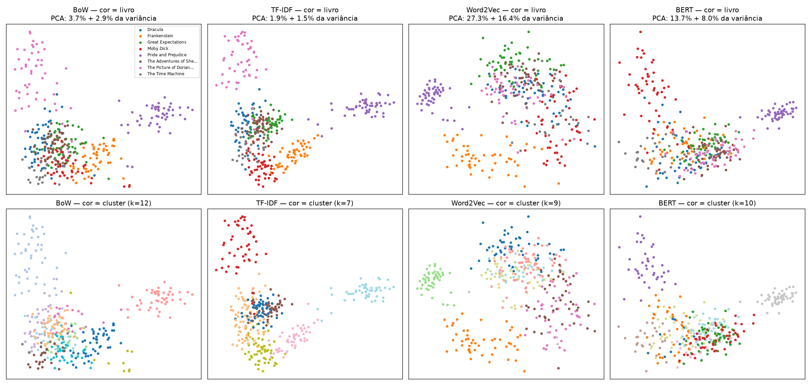
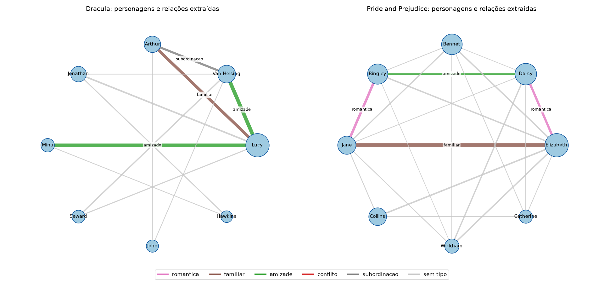
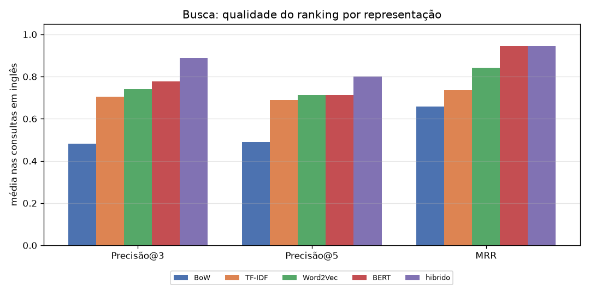
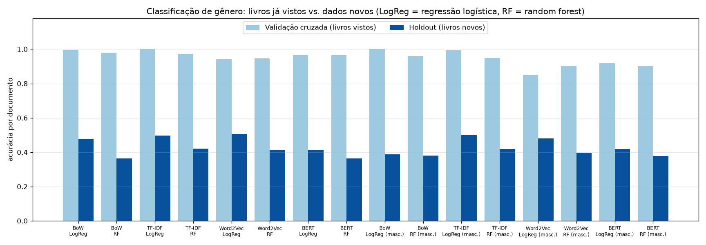
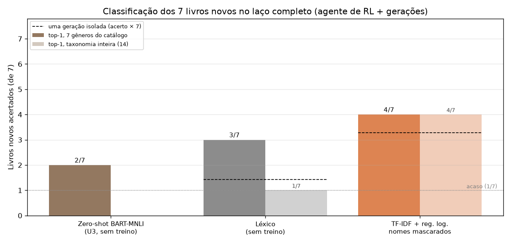
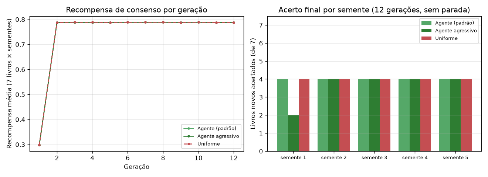
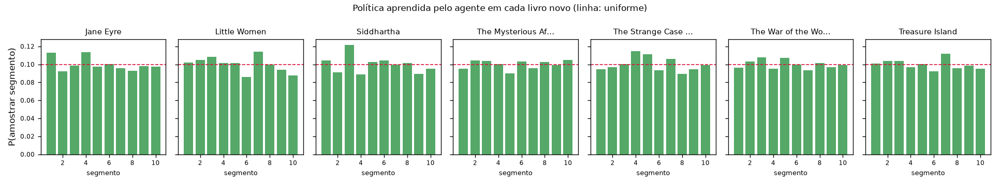

Introdução
Acervos digitais guardam milhares de livros em PDF sem metadados de gênero. Catálogos públicos ajudam, mas são incompletos e divergem entre edições. Classificar uma obra lendo-a inteira com um modelo de linguagem custa tempo e dinheiro.
O Librarian AI testa um caminho mais barato: ler só uma fração das páginas, escolhida por um agente que aprende onde vale a pena ler, e acumular leituras até o veredito parar de mudar.
Objetivos
- Classificar o gênero predominante de clássicos em PDF lendo de 15% a 30% das páginas por geração.
- Usar um agente de aprendizado por reforço para escolher as regiões do livro.
- Interpolar as gerações até a distribuição estabilizar e validar contra catálogos e rótulos curados.
- Comparar representações textuais (U3) e incorporar um LLM com saída estruturada (U4).
Dados e metodologia
Base textual
15 clássicos de domínio público do Project Gutenberg, convertidos em PDF paginado com camada de texto (até 150 páginas por obra, amostragem explicitada). A base (8 obras, 1.134 páginas úteis) treina e ajusta; os livros novos (7 obras, 904 páginas, autores diferentes sempre que possível) só testam. A lista completa, com o gênero curado de cada obra, está na tabela abaixo.
Pré-processamento
Extração com pypdf página a página, junção de hifenização, descarte de
páginas com menos de 120 caracteres e cache por hash. Tokenização, stopwords PT/EN
e mascaramento de nomes próprios são opcionais, aplicados só onde ajudam: modelos de
linguagem recebem a prosa intacta.
Representações (U3)
BoW, TF-IDF sublinear, Word2Vec skip-gram treinado no corpus (média ponderada
pelo IDF) e BERT (all-MiniLM-L6-v2, mean pooling), aplicadas a
agrupamento, busca, recomendação e classificação.
O laço de gerações (U1 → U4)
- Agente sorteia 15–30% das páginas entre 10 segmentos, segundo sua política.
- Classificador devolve uma distribuição sobre 14 gêneros.
- Recompensa de consenso atualiza a política (REINFORCE).
- Interpolação das gerações, ponderada pela confiança.
- Parada quando a divergência de Jensen-Shannon entre vereditos fica abaixo de 0,01 por 3 gerações.
Avaliação
Gênero curado pela equipe (o gabarito das APIs é ruidoso e muda com o tempo), acerto por livro (top-1, top-3) nos livros novos e acerto de cada geração isolada. Métodos sem treino são lidos de dois jeitos: restritos aos 7 gêneros do catálogo, como na U3, e na taxonomia inteira de 14 gêneros.
| Obra | Autor | Gênero curado | Conjunto |
|---|---|---|---|
| Dracula | Bram Stoker | Terror/Horror | base |
| Frankenstein | Mary Shelley | Terror/Horror | base |
| Pride and Prejudice | Jane Austen | Romance | base |
| The Adventures of Sherlock Holmes | Arthur Conan Doyle | Mistério/Policial | base |
| Moby Dick | Herman Melville | Ação/Aventura | base |
| Great Expectations | Charles Dickens | Drama | base |
| The Picture of Dorian Gray | Oscar Wilde | Filosófico/Existencial | base |
| The Time Machine | H G Wells | Ficção Científica | base |
| The Strange Case of Dr Jekyll and Mr Hyde | Robert Louis Stevenson | Terror/Horror | novo (holdout) |
| Jane Eyre | Charlotte Bronte | Romance | novo (holdout) |
| The Mysterious Affair at Styles | Agatha Christie | Mistério/Policial | novo (holdout) |
| Treasure Island | Robert Louis Stevenson | Ação/Aventura | novo (holdout) |
| Little Women | Louisa May Alcott | Drama | novo (holdout) |
| Siddhartha | Hermann Hesse | Filosófico/Existencial | novo (holdout) |
| The War of the Worlds | H G Wells | Ficção Científica | novo (holdout) |
Técnicas avançadas (Unidade 4)
| Tecnologia ou abordagem | Utilizada? | Aplicação ou justificativa |
|---|---|---|
| LLMs e modelos de linguagem | Sim (implementado; execução pendente) | Backend llm com Claude Opus 5.5 via API, implementado e testado offline; a execução no laço aguarda aprovação de custo (estimativa no pôster). Modelos locais da família BERT/BART já usados: zero-shot NLI, MiniLM, DistilBERT (sentimento) e BERT-NER. |
| Prompt engineering e saídas estruturadas | Sim | System prompt com papel, definição dos 14 gêneros e regras de evidência; resposta em JSON Schema garantido (output_config.format), com ids do gênero em enum, justificativa, citações e o campo de controle recognized_work. |
| RAG e recuperação de informações | Não (RAG) | A tarefa classifica as próprias páginas do livro, que já chegam ao modelo como evidência. Recuperação foi usada na U3 (busca híbrida TF-IDF + BERT por Reciprocal Rank Fusion, P@3 0,89), e um RAG com descrições de catálogo arriscaria vazar o rótulo. |
| Agentes e integração com ferramentas | Sim | Agente de aprendizado por reforço (bandit REINFORCE) que decide quais regiões do livro ler; integração com Project Gutenberg, Google Books, Open Library e API da Anthropic. Não é um agente LLM com ferramentas. |
| Modelos locais ou quantizados | Sim (locais) | bart-large-mnli, all-MiniLM-L6-v2, DistilBERT-SST2 e bert-base-NER rodam na máquina (CPU ou GPU, fp16 no zero-shot). Sem quantização inteira (int8/int4). |
| Processamento multimodal | Não | As entradas são PDFs com camada de texto. PDFs digitalizados exigiriam OCR, dificuldade prevista na Unidade 1 e fora do escopo. |
| Outras técnicas avançadas de PLN | Sim | Calibração contextual do zero-shot (Zhao et al., 2021), extração de relações por implicação textual (Sainz et al., 2021), fusão de rankings (RRF) e mascaramento de nomes próprios contra memorização. |
Resultados
Representações e tarefas (Unidade 3)
0,93
NMI entre clusters TF-IDF (k = 7) e livro de origem; 0,88 com o gênero. Os grupos reproduzem livros, puxados pelos nomes de personagens.
0,89
P@3 da busca híbrida TF-IDF + BERT, contra 0,70 e 0,78 de cada um sozinho: eles erram em consultas diferentes.
5/7
livros novos acertados pelo melhor supervisionado. Validação cruzada de 85%–100% contra 36%–51% por documento nos livros novos: sem mascarar nomes, o modelo decora personagens.
+0,12
valência média de Pride and Prejudice, a mais positiva; The Time Machine fica em -0,22. O sentimento acompanha o tom, mas não separa gêneros sozinho.




O laço completo nos 7 livros novos (Unidade 4)
Mesmas sementes e mesmas amostras de páginas para todos os métodos. O supervisionado da U3, agora dentro do laço, acerta 4/7 lendo amostras de 15–30%, e uma geração isolada acerta 47% das vezes: interpolar as gerações corrige parte dos erros de cada amostra.
| Método | Top-1 (7 gêneros) | Top-1 (14) | Top-3 (14) | Acerto por geração | Páginas distintas lidas |
|---|---|---|---|---|---|
| Zero-shot BART-MNLI (U3, por documento) | 2/7 | — | — | — | — |
| Léxico (U3, por documento) | 4/7 | — | — | — | — |
| TF-IDF + reg. log., nomes masc. (U3, livro inteiro) | 5/7 | — | — | — | — |
| Léxico (sem treino) laço U4 | 3/7 | 1/7 | 6/7 | 20% | 83% |
| TF-IDF + regressão logística, nomes mascarados laço U4 | 4/7 | 4/7 | 6/7 | 47% | 83% |

LLM com saída estruturada
Execução pendente
O backend está implementado e coberto por testes automatizados com um cliente simulado (sem rede). A execução real depende de uma chave de API paga e aguarda aprovação de custo pela equipe. Estimativa para o experimento completo (22 execuções de livro, 3–5 gerações cada): ~66 chamadas, ~1.1 milhão de tokens de entrada, cerca de US$ 5,72 (teto de US$ 9,81). Nenhum número de LLM é apresentado aqui antes da execução.
O agente aprende onde ler?
Com 5 sementes e 12 gerações sem parada antecipada, o agente e a amostragem uniforme acertam os mesmos livros. A recompensa de consenso sobe de 0,30 para 0,79 na 2ª geração e fica estável a partir daí: sem variação, o agente não tem sinal para aprender, e sua política termina quase uniforme. Uma versão com passo maior se afasta da uniforme sem acertar mais.
| Estratégia | Livros novos (média) | Acerto por geração | Recompensa média | Maior P(segmento) |
|---|---|---|---|---|
| Agente (padrão) | 4,0/7 | 52% | 0,748 | 0,112 |
| Agente agressivo | 3,6/7 | 50% | 0,748 | 0,242 |
| Amostragem uniforme | 4,0/7 | 52% | 0,748 | 0,100 |


Exemplos de processamento
Uma geração, Treasure Island
Geração 7 de 7: taxa 22%, 34 páginas lidas. Classificação desta amostra: Ação/Aventura (0,20), Drama (0,19), Mistério/Policial (0,18). Veredito final: Ação/Aventura (gênero curado: Ação/Aventura).
Mascaramento de nomes, trecho real
antes Ah, he looked a shark, he did! If we run down this Black Dog, now, there’ll be news for Cap’n Trelawney! Ben’s a good runner; few seamen run better than Ben.
depois Ah, he looked a shark, he did! If we run down this Black Dog, now, there’ll be news for Cap’n X! X’s a good runner; few seamen run better than X.
Nomes detectados nas próprias páginas sorteadas: Admiral, Ben, Benbow, Bill, Blandly, Bristol, Dick, Flint, Gunn, Hawkins, Hispaniola, Hunter.
Discussão
O que funcionou. Treinar com os próprios dados e mascarar nomes próprios transformou um detector de personagens num classificador de gênero, que acerta livros nunca vistos. A busca híbrida e o BERT capturam semelhança de cena, não só de palavras.
Onde erra. Siddhartha sai como terror em todos os supervisionados: o único exemplo filosófico do treino é Dorian Gray. Jekyll and Hyde vira mistério, e a novela é de fato narrada como uma investigação.
Leitura parcial. Cada geração lê 15–30%, mas as gerações somadas cobrem 83% das páginas distintas antes da parada. A economia real exige parar antes: na U3, a divergência já ficava abaixo do limiar na 2ª geração.
Limitações. 15 livros e um livro por gênero na base; rótulos curados pela própria equipe; só inglês; PDFs sintéticos, sem OCR; o gabarito das APIs mudou entre execuções (Pride and Prejudice passou a sair como Drama); e LLMs conhecem estes clássicos, o que exige o controle de memorização.
Avaliação crítica
- 1. Os objetivos iniciais foram alcançados?
- Em parte. O sistema proposto na Unidade 1 está completo e testado, e classifica livros novos bem acima do acaso (4/7 contra 1/7). O diferencial do agente não se confirmou nestes dados, e a leitura parcial vale por geração, não no total.
- 2. Quais técnicas foram mais adequadas?
- TF-IDF com regressão logística e nomes mascarados para classificar; busca híbrida TF-IDF + BERT para recuperar trechos; BERT para semelhança temática entre livros.
- 3. As técnicas avançadas e os LLMs trouxeram melhorias?
- Novas possibilidades, sim: a saída estruturada acrescenta justificativa e citações verificáveis a cada geração, e o campo de reconhecimento da obra permite medir memorização. Melhoria de acerto ainda não pode ser afirmada: a execução com a API está pendente, e o pôster não antecipa números.
- 4. Principais limitações
- Base pequena e desbalanceada, rótulos curados por nós, recompensa de consenso que satura, dependência de API paga e risco de memorização no LLM.
- 5. Como a qualidade foi verificada?
- Livros novos separados do treino, rótulos curados, mesmas sementes para todos os métodos, 124 testes automatizados sem rede nem GPU e reexecução da U3 em CPU, que reproduziu BoW, TF-IDF e Word2Vec com números idênticos (BERT difere só na 3ª casa decimal).
- 6. Aprimoramentos futuros
- Mais livros por gênero; uma recompensa que meça ganho de informação; parada por orçamento de páginas; modelo multilíngue para obras em português; OCR para PDFs digitalizados; Batch API para baratear o LLM.
Conclusões
O projeto entrega um pipeline reprodutível, do PDF ao veredito: coleta, extração, quatro representações, três famílias de classificadores e um LLM com saída estruturada, todos no mesmo laço de gerações e avaliados nos mesmos livros novos. O resultado mais sólido é metodológico: separar livros de teste e mascarar nomes muda a conclusão sobre qual modelo funciona. O agente de reforço está implementado, mas, com a recompensa atual, ainda não supera o sorteio uniforme. O estágio é de protótipo de pesquisa funcional, pronto para uma base maior.
Referências e informações técnicas
Dados e catálogos
- Project Gutenberg, gutenberg.org (obras de domínio público)
- Google Books API e Open Library Search API (gabarito externo)
Modelos
facebook/bart-large-mnli(zero-shot NLI)sentence-transformers/all-MiniLM-L6-v2(BERT)distilbert-base-uncased-finetuned-sst-2-english(sentimento)dslim/bert-base-NER(entidades)claude-opus-5-5, Anthropic (LLM)
LLM no processamento
- Modelo: Claude Opus 5.5 (
claude-opus-5-5) - Acesso: API da Anthropic (Messages API), SDK
anthropic1.17 - Esforço
low, raciocínio adaptativo, até 4.096 tokens de saída - Saída estruturada por JSON Schema; fallback do servidor em recusas
- Até 50 páginas por chamada; respostas em cache local
- Chave lida de
.env, fora do repositório
Bibliotecas
Python 3.12, pypdf, scikit-learn, gensim, transformers, PyTorch, rapidfuzz, matplotlib, PyYAML, anthropic.
Literatura
- Williams (1992). REINFORCE, Machine Learning 8.
- Mikolov et al. (2013). Word2Vec.
- Devlin et al. (2019). BERT.
- Reimers e Gurevych (2019). Sentence-BERT.
- Lewis et al. (2020). BART.
- Zhao et al. (2021). Calibrate Before Use.
- Sainz et al. (2021). Relation extraction as textual entailment.
- Cormack et al. (2009). Reciprocal Rank Fusion.
Uso de IA generativa
Fornecedor e modelo: Anthropic, Claude Opus 5.5 (claude-opus-5-5), pela
ferramenta Claude Code. Usos: implementação e testes do código das Unidades 3 e 4, execução
dos experimentos e redação preliminar deste pôster a partir dos resultados medidos; a equipe
revisa as análises. Principais prompts da Unidade 4:
- vou te passar o trabalho aos poucos, inicialmente olhe nosso trabalho de Processamento de linguagem natural: [link do repositório] leia ele avalie e entenda
- Antes de iniciar a atividade, gostaria que você analisasse o projeto com calma e, assim que terminar essa análise inicial, execute e teste o projeto para entender seu funcionamento na prática. [...] Antes de começar o desenvolvimento, apresente sua avaliação [...] Depois dessa avaliação, desenvolva a solução escolhida, seguindo as orientações do professor e respeitando a arquitetura, as tecnologias e os padrões já utilizados no projeto. [...] Ao final, apresente um resumo do que foi desenvolvido [...] (acompanhado do PDF do enunciado da Unidade 4)
- antes de usar os tokens do opus 5 me avise, como vai funcionar, pois quero validar
O prompt da Unidade 3 está no relatório da U3.